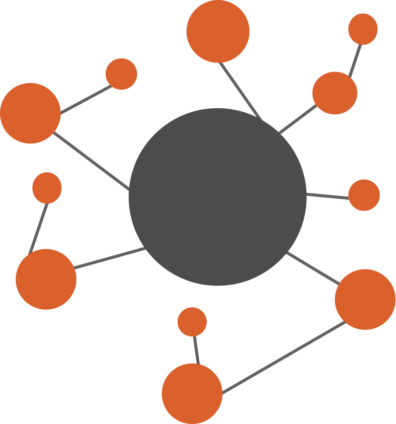

Archeion
Research tool powered by SBERT.
Archeion is a NLP powered web-based thesis and capstone
research repository developed to address the growing need for
structured, accessible, and intelligent management of academic
research within the College of Computer Studies at Tarlac
State University.
The platform serves as a centralized archive where students,
faculty, and researchers can submit, browse, and retrieve
thesis and capstone projects with ease. Archeion integrates
content similarity detection powered by Sentence-BERT (SBERT)
to promote academic integrity by identifying semantically
similar works — and trend insights tools that surface patterns
in research topics over time.
Archeion was built on the belief that institutional knowledge
should not be siloed or lost to time. Every thesis and
capstone project represents months of rigorous inquiry, and
this system exists to ensure that work remains discoverable,
properly attributed, and useful to the scholars who come
after.
Archeion is developed by a four-person capstone team from the
College of Computer Studies, Tarlac State University — Anjela,
Juliana, Ashlyn, and Roxanne. Driven by a shared commitment to
innovation and academic service, the team designed and
engineered the system from the ground up, spanning backend
architecture, semantic similarity algorithms, user interface
design, and research documentation.
Archeion is intended for use by students, faculty, and staff
within the College of Computer Studies at Tarlac State
University. Access is role-based, ensuring the right people
have the right level of interaction with the repository.
Unlike a simple file storage system, Archeion is intelligent.
It uses SBERT-powered semantic similarity detection to flag
research papers that are conceptually similar — not just
keyword matches — helping maintain academic integrity. Its
trend insights feature also helps advisers and students
identify popular and emerging research topics within CCS.